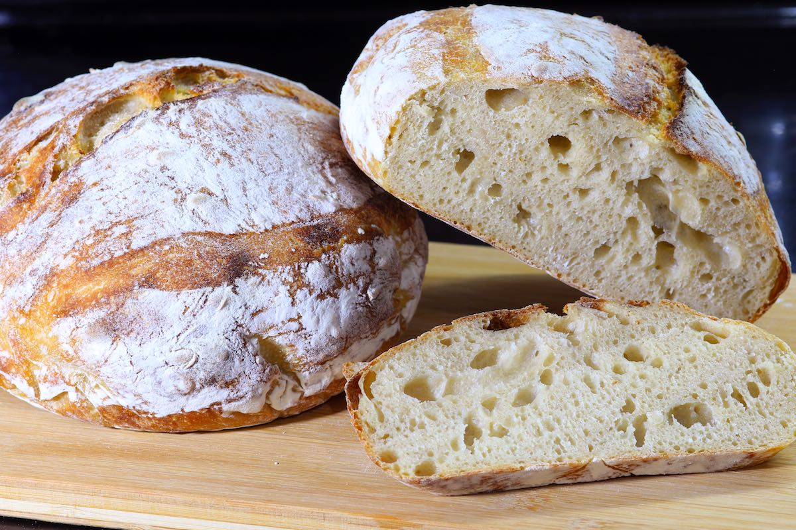

El pa de sègol es fa amb farina de sègol. Essencial en sandvitxos delicatessen com els Reubens, n'hi ha de clars, mitjans i foscos, segons la part de la baia de sègol que s'utilitzi per fer la farina i la part del gra que es mola. A Europa, el pa de sègol se sol elaborar amb farina de sègol 100%, mentre que als EUA se sol utilitzar melassa i cacau en pols, que realcen el sabor i el color. També s'hi poden afegir llavors d'alcaravea, que realcen l'aroma de la foguera encara més. El pa de sègol té una textura densa, un sabor terrós i una acidesa peculiar.
